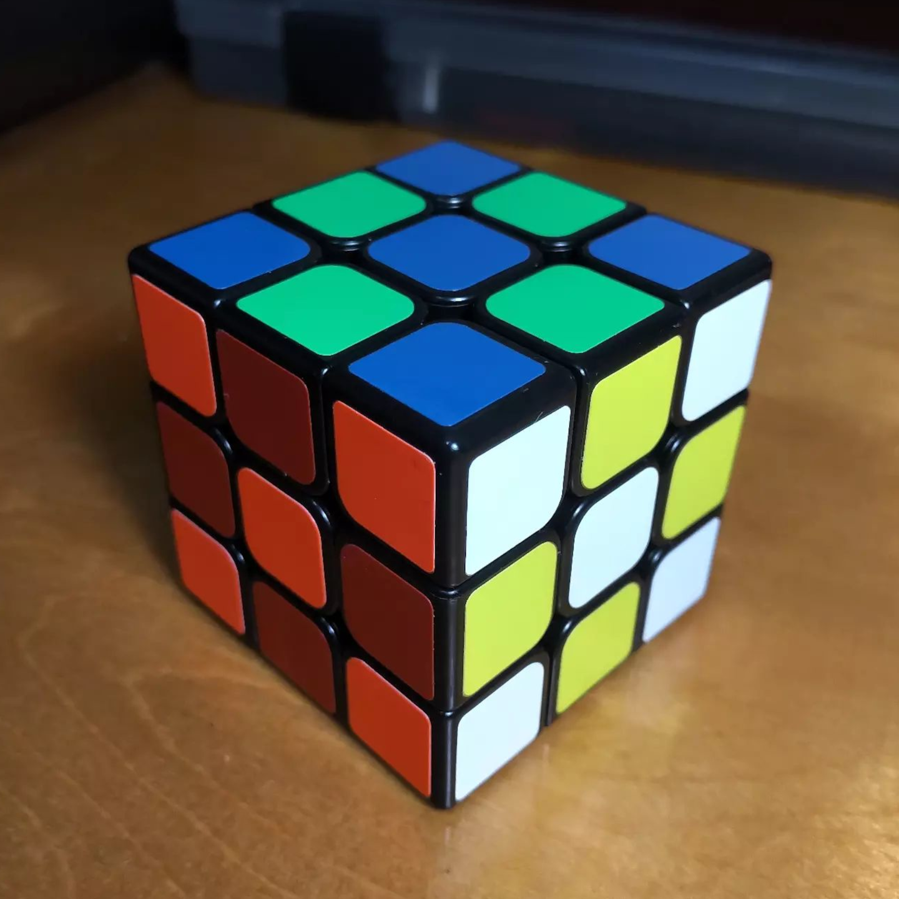
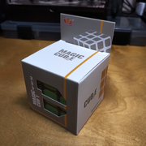
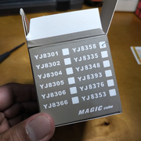
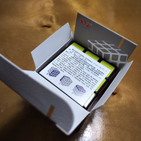
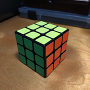
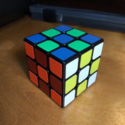
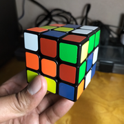

YJ Guanlong v3
{kind=link}

YJ8358 (2018)
YJ Magic Cube 3 × 3 (YJ-8358). First cube I bought from a store here on island. A bit too loose out of the box, but it is adjustable via screw. After tightening one full turn and adding lubrication (Cubicle Labs Silk), the turning is much improved. The turning is now like biting into a milk chocolate bar--smooth, but with an enjoyable trace of resistance. Very cheap, and though it is stickered and also not magnetized, the colors really pop with a lot of contrast between the dark and light colors. The shape of the rounded squares leans more toward the square side, which is to my liking; center squares that are actually circles I really can't get behind, even though many cube manufacturers are trending towards this. All in all, quite nice if you can set up a cube.
Original post: https://www.instagram.com/p/Cnt5k_6LrX0
Specifications
| Make | YJ |
|---|---|
| Model | Guanlong v3 |
| Edition/Variant | |
| Model no. | YJ8358 |
| Release year | 2018 |
| Magnets (edge-corner) | ❌ |
|---|---|
| Magnets (core) | ❌ |
| Magnets (maglev) | ❌ |
| Stickerless | ❌ |
| Internals | Black |
|---|---|
| Externals | Stickered (with dark blue) |
| Adjustment | Philips screw - axis distance |
| Remarks | Bought on island |
Photos
{kind=link}

Cube box
{kind=link}

Box side (with model number)
{kind=link}

Unboxing experience
{kind=link}

Cube (solved state)
{kind=link}

Cube (checkerboard state)
{kind=link}

Cube (scrambled state)
Collections
This cube is part of the following collections: